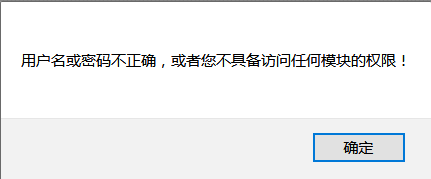
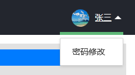
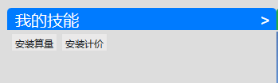
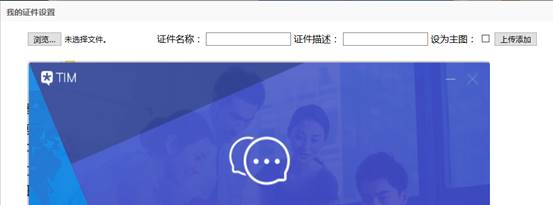
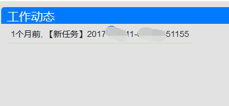

OA系统使用手册
一、登录
打开浏览器，在地址栏输入http://bimpan.iok.la:8，输入正确的员工编号和密码，即可登录系统。如果确定自己输入的用户名和密码是正确的但是仍收到如下提示，可能是因为管理员没有为该员工配置任何模块的访问权限，请联系管理员配置访问权限。

二、员工主页
1.密码修改
在员工主页页面，鼠标悬停在右上角的头像上，会展示“修改密码”的链接，点此链接可跳转到密码修改页面。建议在修改密码后，立即重新登录系统。

2.我的技能
点击“我的技能”右侧的“>”符号，会弹出技能配置页面，员工可根据自己的实际配置相应技能。点击某行的编辑按钮，该行进入编辑状态，勾选或取消勾选复选框，之后点击更新即可完成配置。

3.我的证件
点击“我的证件”右侧的“>”符号，会弹出证件管理页面。如果需要让此证件在主页展示，请在上传时勾选“设为主图”，否则默认情况下即使已经上传了图片，员工主页也是不展示任何证件照片的。在后续上传时，如果再次勾选“设为主图”，那么新上传的图片会取代之前的主图在主页展示。

4.工作动态
工作动态模块，默认会每隔2分钟自动拉取一次数据，因此大可不必为了获得任务动态而频繁手动刷新页面。

5.任务列表
任务列表模块，展示了当前登录员工的相关任务信息。在列表顶部检索文本框中输入任务编号，即可查询指定任务信息。在列表中点击某一行右侧的“查看资料”按钮，列表底部会展示该任务相应资料信息。
6.任务资料模块
任务资料模块提供了与指定任务相关的一系列功能。
6.1任务资料标签
该标签下展示任务书、完成稿、修改稿、修改完成稿、疑问以及疑问答复相关内容。可点击右侧的“+”符号创建上面说的这些类型的资料标签。

点击标签名，下方将展示该标签下的资料列表。如需上传资料，点击“浏览”按钮即可浏览并上传文件。如需填写该资料的描述信息，可在描述的文本框内填写。
上传的文件将立即展示在列表右侧，资料支持删除、下载、预览。
删除和下载不再做说明。
预览只支持常见的文本文件（.txt）、图片文件（.jpg、.png、.bmp、.gif等）、微软 Office 系列文件（.doc、.docx、.xls和.xlsx）、PDF文件以及压缩包文件（.rar、.zip和.7z，压缩包内嵌套压缩包文件的不再支持预览）等。需要注意的是，预览功能将弹出一个新窗口，如果用户点击了预览后进度条已经消失（表示系统处理已完成）但仍未跳转到新页面，请注意核实新页面是否被浏览器拦截。
6.2操作历史标签
操作历史标签展示了任务资料模块的历史操作记录。
说明：如果对某些表单控件的功能不清楚，可将鼠标悬浮于该控件之上，此时会显示一些提示信息。例如当鼠标悬浮于下图的“+”之上时，将会显示提示信息。